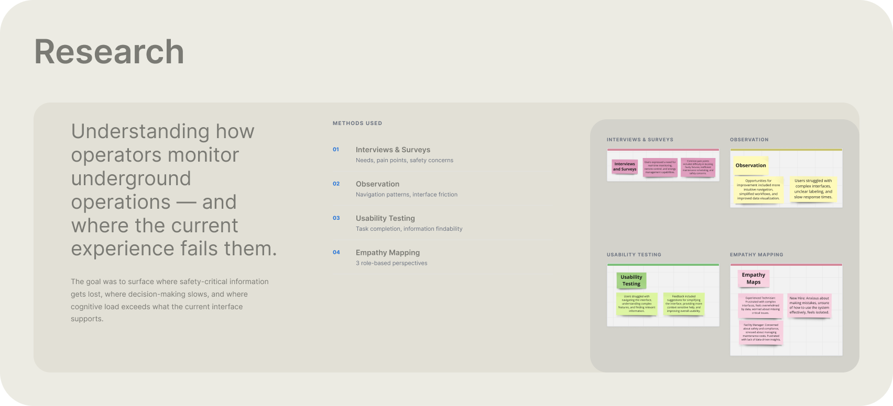
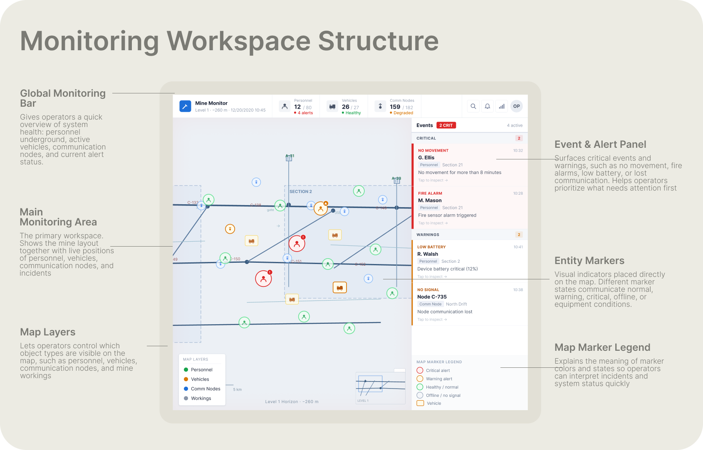
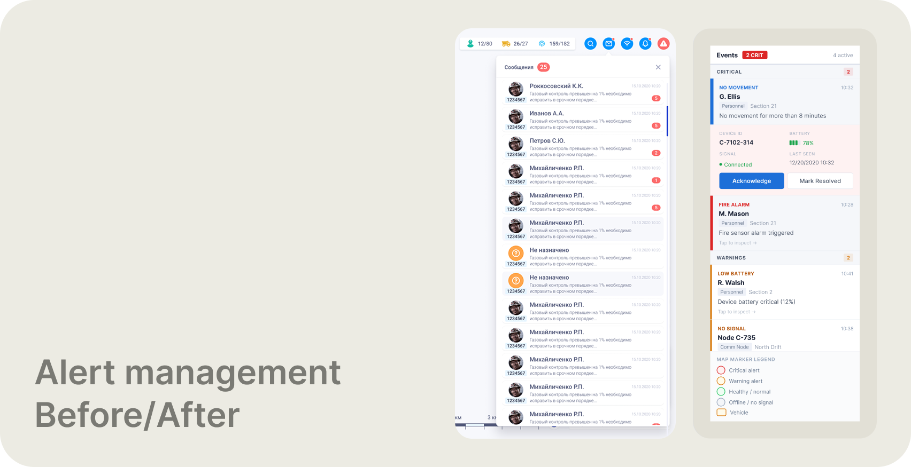
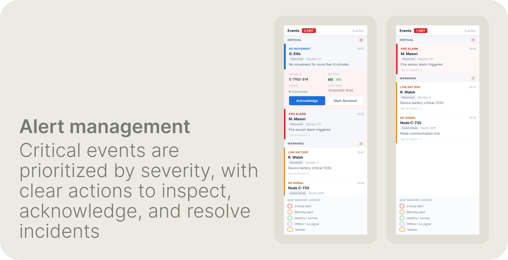
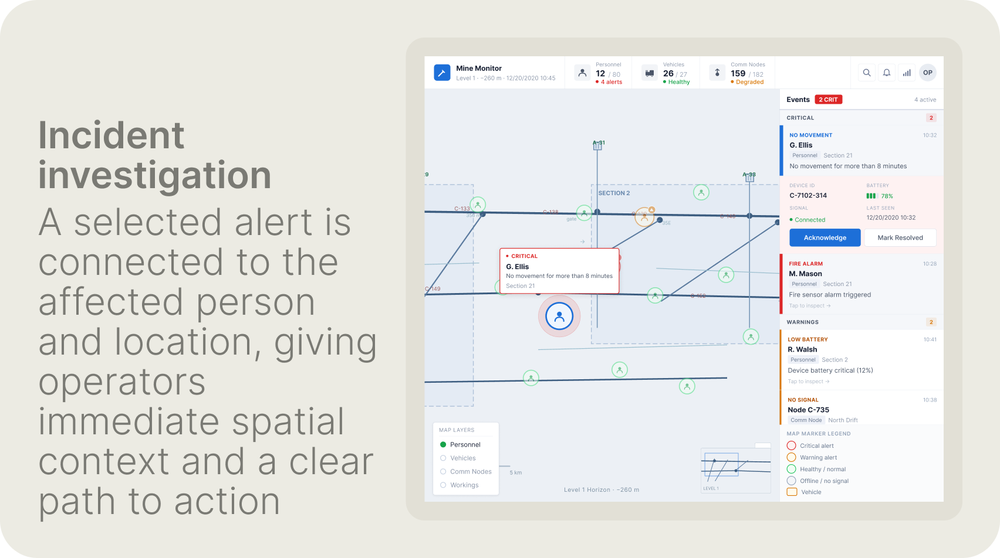
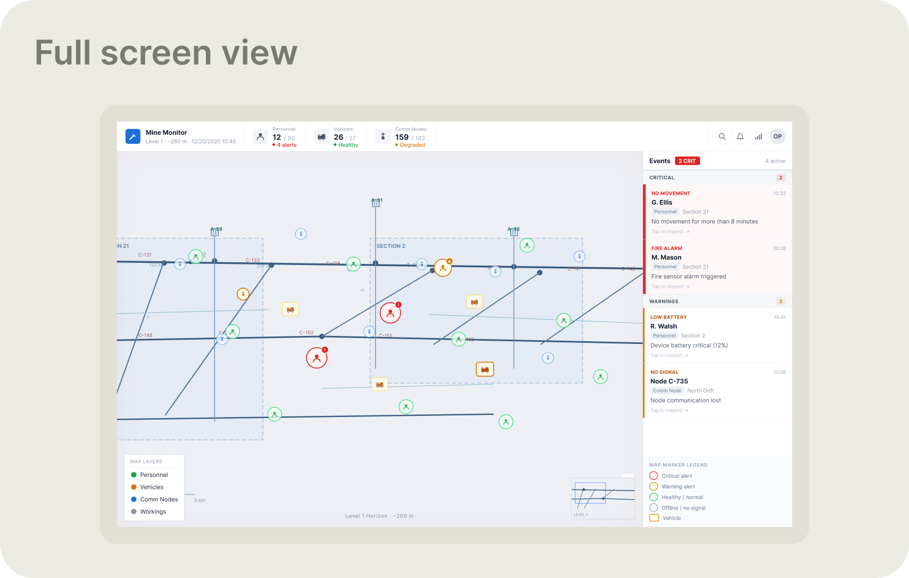

Role and overall result
UX/UI Designer. Redesigned the full monitoring workspace from research through to final screens — alert hierarchy, map priority, incident investigation, and check-in/out flow.
<5 sec
monitoring state readable
<90 sec
check-in/out flow
+67%
operational coverage
Tools and methodologies
Figma — all screen design and component system. Research across four methods: user interviews and surveys, direct observation of the existing system in use, usability testing, and empathy mapping across three operational roles.

Research — 4 methods across 3 operational roles: interviews & surveys, direct observation, usability testing, and empathy mapping
| Research theme | What was found | Design response |
|---|---|---|
| Critical information detection | Safety incidents competed visually with routine operational data at the same weight | Alerts lead the Events panel, sorted by severity — Critical above Warnings above routine |
| Complexity under pressure | Dense interface slowed navigation and decision-making during time-sensitive situations | Competing controls reduced; high-frequency information placed in predictable, persistent locations |
| Experience-level support | New operators feared making mistakes; experienced operators frustrated by unnecessary complexity | Expert workflows kept fast; contextual guidance surfaces only when needed |
| Decision support | System showed raw data — counts, IDs, timestamps — without communicating operational health meaning | Raw data translated into operational states: healthy / degraded / warning / critical |
Research synthesis — four themes that drove redesign priorities
- Users worried about missing critical issues — a fire alarm and a routine personnel entry read identically in the original interface
- Users struggled to find relevant information during incidents — entity and personnel views buried safety status behind badge numbers and professions
- Complex interfaces created cognitive load — secondary map data and redundant controls competed with the information operators actually needed
- New operators needed guidance, experienced operators needed speed — a single rigid interface served neither
- Real-time monitoring was the core need — raw counts said nothing about whether the operational state was healthy or critical

Monitoring workspace anatomy — Global Monitoring Bar, live underground map, Event/Alert panel, map layers, entity markers, and marker legend

Alert panel — before (left) and after (right). Old: a flat, undifferentiated list with no severity hierarchy. Redesign: structured by severity — Critical incidents lead, Warnings follow, each with entity, location, and event type.
What changed and why
The Events panel was restructured with explicit severity tiers — Critical at the top, Warnings below — each entry showing the affected person, location, event type, and timestamp. Map markers were given semantic color: green for healthy, orange for warning, red for critical, grey for offline. The engineering drawing was visually subdued so monitoring markers could carry higher contrast. The global monitoring bar was redesigned to show health ratios and alert states, not just counts. Entity popups were simplified to the information needed to make a decision — not every available field.
* Alert triage flow: alert detected → identify severity → select alert → locate entity on map → inspect details → acknowledge → mark resolved.
Redesigned system

Alert panel detail — Critical events lead with the affected person, location, event type, and time. A selected alert surfaces device ID, connection state, battery level, and clear Acknowledge / Mark Resolved actions.

Incident investigation — selecting an alert connects directly to the affected entity on the live map. Operators immediately see who, where, and what — without switching screens or searching manually.

Complete monitoring workspace — Global Monitoring Bar with health ratios, live underground map with entity markers, and persistent Events panel. A single view covering everything an operator needs to assess the current state of underground operations.
← Portfolio